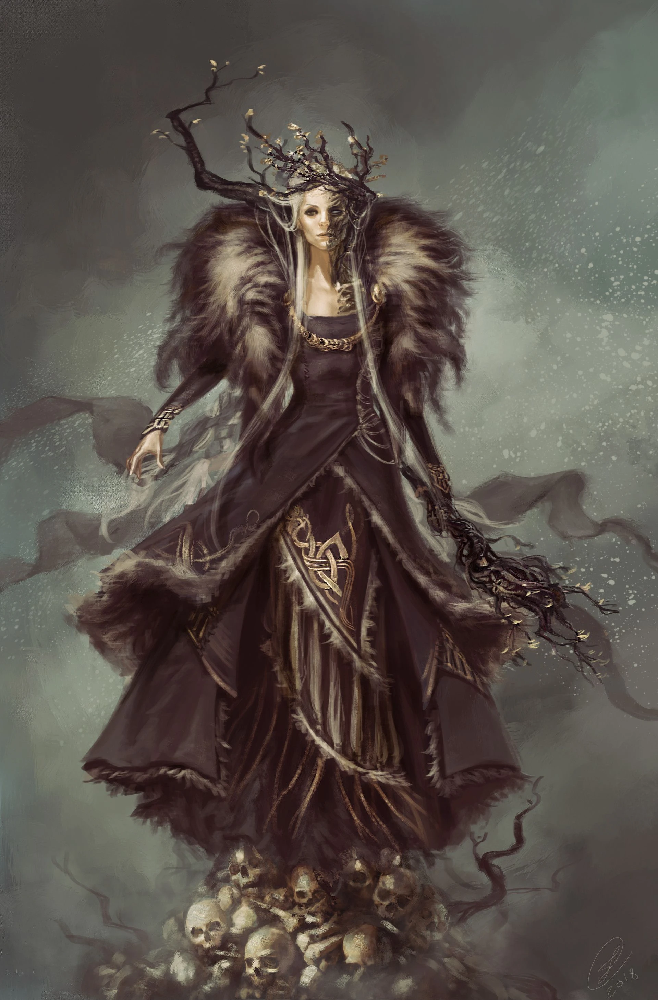

Gods and Deities

Odin
The Allfather

Thor
God of Thunder

Loki
God of Mischief

Freya
Goddess of Love
Fenrir
Bringer of Ragnarök

Hel
Goddess of Death
Ullr
God of the Hunt

Jormungandr
The World Serpent